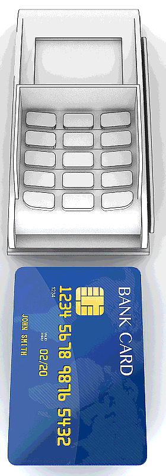
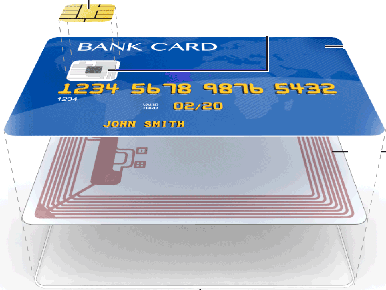
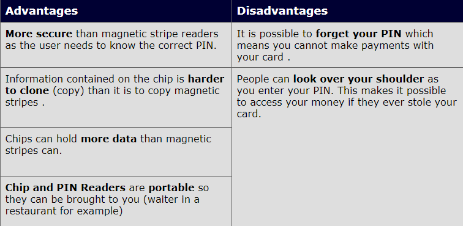

input devices
Chip and Pin reader

It is Electronic input devices contain keypad that can read SMART CARD (plastic cards embedded with “chip” of computer memory inside them )
WORK :
A customer inserted the SMART CARD on the front face into reader and asked to input thier PIN "personal Identity Number" , the READER do SCAN the card , where metal contacts connect to the metal pads on the front face of the card THEN The reader can then access the memory chip and the data stored on it ,If the entered PIN matches the stored value.
What's inside a smart card?


To show viedo how to work or more information ?
press here
*actual start at 0:50